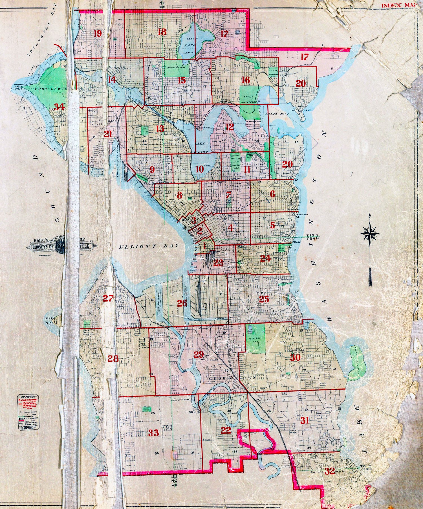

Index map

Numbered red rectangles show the area each plate covers. Use it to find the plate that contains the corner of Seattle you’re after, then click that number in the gallery on the right.
Plates
Each plate is a high-res scan of the original 1912 lithograph, ~22 in × 16 in at 180 dpi. Click to open the deep-zoom viewer.